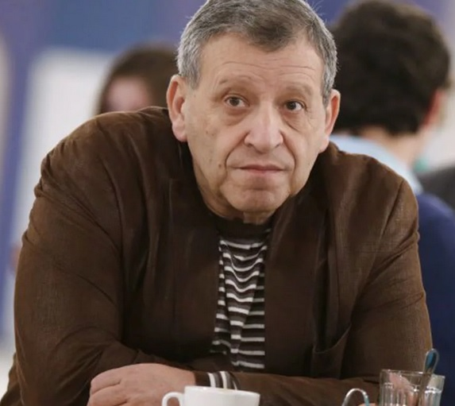

Грачевский Борис Юрьевич

Дата рождения 18 марта 1949
Место рождения Раменский район, Московская область, РСФСР, СССР
Дата смерти 14 января 2021 (71 год)
Место смерти Москва, Россия
Гражданство СССР Россия
Профессия
кинопродюсер, кинорежиссёр, сценарист, актёр
Награды
Орден Почёта — 2009 Орден Дружбы — 2019
Борис Юрьевич Грачевский (18 марта 1949, Раменский район, Московская область — 14 января 2021, Москва) — советский и российский кинорежиссёр[3] и сценарист, организатор кинопроизводства, художественный руководитель детского киножурнала «Ералаш» (2002—2021). Член Российской академии кинематографических искусств «Ника»; заслуженный деятель искусств РФ (2000), лауреат премии Правительства РФ (2010).
Борис Грачевский родился 18 марта 1949 года в Раменском районе Московской области, в доме отдыха «Полушкино», в еврейской семье. Отец — Юрий Максимович Грачевский (1924—1998)[4], уроженец Витебска, участник Великой Отечественной войны, лейтенант, в 1942—1946 годах служил в войсках противовоздушной обороны[5], после демобилизации работал конферансье и культработником. Мать — Ольга Лазаревна Грачевская (урождённая Жарковская), библиотекарь.
В 6 лет вышел с отцом на сцену, в 10 лет поставил первый танец, в 11 — новогодний утренник[2][6][7].
Окончил Калининградский механический техникум при заводе С. П. Королёва[2], где получил специальность токаря[8]. Работал токарем, потом техником-конструктором на заводе Королёва[2].
В 1968 году служил в армии[2]. По словам Грачевского во время военной службы находясь, после травмы головы, в состоянии клинической смерти он пережил опыт пребывания в загробном мире в виде полёта в «светлом туннеле»[9].
После службы в армии устроился на киностудию имени Горького грузчиком[2]. Работал администратором на картинах Александра Роу, Марка Донского, Василия Шукшина[2]. На киностудии был старшим администратором, заместителем директора съёмочной группы[2].
В 1969 году поступил на заочное отделение ВГИКа на факультет «Организация кинопроизводства», но учёбу окончил лишь через 23 года[2]. «Ералаш»
В 1974 году по своей инициативе совместно с драматургом Александром Хмеликом основал детский юмористический киножурнал «Ералаш», где работал до конца своей жизни[10]. Написал 11 сценариев для киножурнала, поставил ряд сюжетов в качестве режиссёра-постановщика, а также сыграл ряд ролей в качестве актёра, в некоторых сюжетах озвучил текст от автора.
В 1995 году на базе Киностудии имени Горького основал киностудию «Ералаш-Лэнд», а в 2005 году на базе киностудии основал киностудию «Ералаш».
Создатель документальных фильмов, автор проекта «Социальная реклама».
В 2008—2009 годах снял свой первый полнометражный художественный фильм «Крыша», вышедший на экраны в сентябре 2009 года.
С 2009 года неоднократно был председателем жюри «Видеобитвы». C 2013 года принимал участие в благотворительных проектах для детей-инвалидов Международного центра искусств Маргариты Майской «Арт-Изо-Центр».
В июле 2014 года Грачевский в качестве режиссёра приступил к производству драматического фильма «Между нот, или Тантрическая симфония» о поздней любви композитора с мировым именем и молодой девушки из глубинки. Главные роли сыграли Андрей Ильин и Янина Мелехова.
Автор сборника юмористических изречений «Идиотизмы».
С 2017 года — член жюри детского КВН на телеканале «Карусель».
Болезнь и смерть
В 2018 году в телепередаче «Судьба человека» Грачевский рассказал, что ранее у него диагностировали рак кожи, причиной которого стала родинка; в связи с этим было несколько операций, облучение и химиотерапия[11].
21 декабря 2020 года у Бориса Грачевского диагностировали заражение коронавирусом. Через шесть дней его госпитализировали, а ещё через два перевели в реанимацию[12]. 7 января режиссёра подключили к аппарату ИВЛ и ввели в состояние медикаментозного сна. 14 января 2021 года на 72-м году жизни Грачевский умер из-за осложнений, вызванных коронавирусной инфекцией[13][14][15].
Церемония прощания с Борисом Грачевским прошла в Москве 17 января 2021 года в Центральном Доме кино. Похоронили кинорежиссёра в тот же день на Троекуровском кладбище[16][17]. Личная жизнь
Хотя не считал себя верующим человеком, но прочитав в юности роман «Мастер и Маргарита» М. А. Булгакова, интересовался религиозными вопросами и посещал храмы, включая храм Гроба Господня в Иерусалиме[9]. По собственным словам, в детстве часто встречался с патриархом Алексием I, проживавшим в доме рядом с его дедом, который возвращаясь с литургии в Богоявленском соборе в Елохове угощал детей конфетами[9].
Первая жена — Галина Яковлевна Грачевская (род. 1 января 1948, прожил в браке почти 35 лет, с 1970 года[11]).
сын — Максим Борисович Грачевский (род. 9 декабря 1972) — бизнесмен, генеральный директор ОАО «Трудовые резервы»[18][19].
дочь — Ксения Борисовна Алеева-Грачевская (род. 20 июня 1979), работала в Ералаше, руководитель туристического агентства ООО «Клуб Фаренгейт»[11][20].
Вторая супруга (с мая 2010 по февраль 2014) — Анна Евгеньевна Грачевская (Панасенко) (род. 6 сентября 1986), вместе с мужем снималась в 2012 году в «Ералаше», в эпизоде № 268 «Крик», где он сыграл главную, а она — эпизодическую роль медсестры[3].
дочь — Василиса Борисовна Грачевская (род. 19 сентября 2012)[21].
Третья супруга (с февраля 2016[22]) — Екатерина Белоцерковская (род. 25 декабря 1984) — актриса и певица[23].
сын Филипп Борисович Грачевский (род. 8 апреля 2020)
Общественная позиция
11 марта 2014 года подписал обращение деятелей культуры России в поддержку политики президента РФ В. В. Путина на Украине и в Крыму[24].